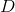
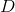
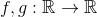
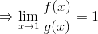
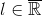
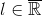
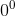

Operații cu limite de funcții
Teorema LF7: Operații cu limite de funcții
Fie  un interval de numere reale, funcțiile
un interval de numere reale, funcțiile  ,
,  un punct de acumulare al mulțimii  și
un punct de acumulare al mulțimii  și  astfel încât și , cu .
astfel încât și , cu .
Atunci au loc următoarele operații:
- Dacă are sens, atunci .
(Limita sumei este egală cu suma limitelor)
- Dacă are sens, atunci .
(Limita produsului este egală cu produsul limitelor)
- Dacă ,
 pentru orice și are sens, atunci
pentru orice și are sens, atunci  .
.
(Limita câtului este egală cu câtul limitelor)
- Dacă , pentru orice
 și are sens , atunci .
și are sens , atunci .
(Limita unei puteri este egală cu puterea limitelor)
Exemple:
- Fie funcțiile ,
 și . Să se calculeze limita sumei celor două funcții în punctul
și . Să se calculeze limita sumei celor două funcții în punctul  .
.
Rezolvare:
Având în vedere faptul că punctul , vom calcula limita sumei celor două funcții folosind Teorema LF5 din secțiunea Limitele funcțiilor elementare.
Suma celor două funcții este:
.
Atunci:
Calculăm și .

Observăm că:
.
- Fie funcțiile ,
 și . Să se calculeze limita produsului celor două funcții în punctul .
și . Să se calculeze limita produsului celor două funcții în punctul .
Rezolvare:
Având în vedere faptul că punctul , vom calcula limita produsului celor două funcții folosind Teorema LF5 din secțiunea anterioară, Limitele funcțiilor elementare.
Produsul celor două funcții date este:
.
Avem că:
Calculăm și .
Atunci rezultă că:
.
- Fie funcțiile , și
 . Să se calculeze limita câtului celor două funcții în punctul .
. Să se calculeze limita câtului celor două funcții în punctul .
Rezolvare:
Având în vedere faptul că punctul , limita câtului celor două funcții se va calcula folosind Teorema LF5 din secțiunea Limitele funcțiilor elementare.
Câtul celor două funcții este:
.
Atunci avem că:
.
Calculăm, pe rând, și .

.
.
În concluzie, avem: .
- Fie funcțiile , și . Să se calculeze .
Rezolvare:
Deoarece punctul , limita puterii celor două funcții se va calcula utilizând Teorema LF5 din secțiunea Limitele funcțiilor elementare.
Calculăm  și .
și .
Se observă că:
.
Teorema LF8: Limita modulului
Fie funcția  și un punct de acumulare al mulțimii . Dacă
și un punct de acumulare al mulțimii . Dacă  , cu , atunci .
, cu , atunci .
Așadar: . (Limita modului este egală cu modulul limitei.)
Exemplu:
Fie funcția  , . Să se calculeze limita modulului funcției date în punctul
, . Să se calculeze limita modulului funcției date în punctul  .
.
Rezolvare:
Calculăm limita cerută aplicând Teorema LF5 , din secțiunea Limitele funcțiilor elementare, deoarece .
.
În continuare, calculăm .
.
Atunci:
 .
.
Observație:
Nu au sens (adică nu se pot efectua) operațiile:

- 

Expresiile de mai sus de numesc cazuri de nedeterminare.
Se spune că o operație are sens în dacă nu corespunde unui caz de nedeterminare de mai sus.